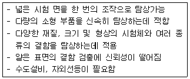
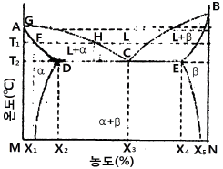

침투비파괴검사기능사 (2010-01-31 기출문제)
1과목: 침투탐상시험법(대략구분)
1. 자분탐상시험의 특징을 설명한 것 중 틀린 것은?
- 시험체가 전도체이어야만 측정할 수 있다.
- 표면 및 표면 근처의 결함을 찾을 수 있다.
- 결함모양이 표면에 나타나므로 육안으로 관찰할 수 있다.
- 사용되는 자분은 시험체 표면의 색과 잘 대비를 이루어야 한다
(정답률: 65%)

2. 가스흐름율의 단위인 clusec 과 lusec 의 관계가 올바른 것은?
- 1clusec = 102 lusec
- 1clusec = 10 lusec
- 1clusec = 10-1 lusec
- 1clusec = 10-2 lusec
(정답률: 44%)
3. 각종 비파괴검사의 종류와 그 원리가 옳게 연결된 것은?
- 육안시험 - 열화상해석
- 침투탐상시험 - 전자기현상
- 초음파탐상시험 - 파(음)의 전달
- 스트레인시험 - 색채의 변화를 관찰
(정답률: 84%)
4. 누설시험의 “가연성 가스” 의 정의로 옳은 것은?
- 폭발범위 하한이 15% 인 가스
- 폭발범위 상한과 하한의 차가 15% 인 가스
- 폭발범위 하한이 10% 이하 또는 상한과 하한의 차가 20% 이상인 가스
- 폭발범위 하한이 20% 이하 또는 상한과 하한의 차가 10% 이상인 가스
(정답률: 53%)
5. 다음 중 음향방출검사 (AE)와 관련이 없는 것은?
- 음향반사
- 카이저 효과
- 동적 불연속의 탐지
- 소성변형에 의한 에너지 방출
(정답률: 26%)
6. 초음파탐상시험에서 스넬(Snell)의 법칙은 무엇을 결정하는데 주로 이용되는가?
- 음향인피던스
- 각의 상관관계
- 음압반사율
- 반사음 에너지의 총량
(정답률: 34%)
7. 압연한 판재의 라미네이션(lamination)을 찾아내는데 가장 적합한 비파괴검사법은?
- 방사선투과시험
- 초음파탐상시험
- 침투탐상시험
- 자분탐상시험
(정답률: 60%)
8. 자분탐상시험에 대한 설명으로 옳은 것은?
- 철강재료 등의 강자성체는 자화되면 알루미늄 등의 비자성체에 비해 많은 자속을 발생한다.
- 자속은 자기의 흐름으로 비자성체 중에는 매우 흐르기 쉬우나 강자성체 중에는 흐르기 어렵다.
- 자속이 흐르고 있는 자로의 도중에 결함이 존재하면 그 곳에는 기체나 비금속 개재물 등의 강자성체가 포함되어 있기 때문에 자속이 흐르기 어렵다.
- 표면 또는 표면직하에 있는 결함에서는 자속이 결함을 피 하는 것처럼 퍼져 흐르고, 표층부의 자속이 비자성체 표면상의 공간에 결함누설자속이 된다.
(정답률: 37%)
9. 침투탐상시험 중 수세성 침투탐상시험의 장점은?
- Scratch 등의 판정에 좋다.
- 표면이 매끈한 부분에 좋다.
- 넓고 얇은 결함 탐상에 좋다.
- 표면이 겊친 부분에 적합하다.
(정답률: 50%)
10. 다음 중 와전류탐상시험으로 측정할 수 있는 것은?
- 절연체인 고무막 두께
- 액체인 보일러의 수면 높이
- 전도체인 파이프의 표면 결함
- 전도체인 용접부의 내부 결함
(정답률: 79%)
11. 침투탐상시험할 때, 건조처리와 현상처리를 효과적으로 하기 위해 잉여 침투액을 물세척한 다음 건조처리 없이 바로 현상처리를 할 수 있는 현상은?
- 습식현상법
- 건식현상법
- 속건식현상법
- 무현상법
(정답률: 46%)
12. 다음 중 방선선투과시험으로 검출하기 가장 곤란한 것은?
- 체적 결함
- 결함의 형상
- 조사방향에 깊이가 있는 면상 결함
- 조사방향에 검사가 있는 면상 결함
(정답률: 35%)
13. 두꺼운 금속 용기 내부에 존재하는 경수소화합물을 검출 할수 있고, 특히 핵연료봉과 같이 높은 방사성 물질의 결함검사에 적용할 수 있는 비파괴검사법은?
- 감마선투과검사
- 음향방출검사
- 중성자투과검사
- 초음파탐상검사
(정답률: 64%)
14. 와전류탐상시험의 장점에 대한 설명으로 틀린 것은?
- 검사의 숙련도 없이 판독이 용이하다.
- 고속으로 자동화 검사가 가능하다.
- 다른 검사법과 달리 고온에서의 측정이 가능하다.
- 지시가 전기적 신호로 얻어지므로 결과를 기록하여 보관할 수 있다.
(정답률: 53%)
15. 침투탐상시험시 이상적인 현상제로서 갖추어야 할 사항과 거리가 가장 먼 것은?
- 결함 부위에서 침투제에 쉽게 젖어야 한다.
- 표면에 균일한 도포 막을 형성시켜야 한다.
- 주위 색깔과 구별될 수 있는 색깔이어야 한다.
- 형광침투제 사용시 현상제는 형광물질이어야 한다.
(정답률: 69%)
16. 침투탐상시험의 전처리시 초음파 세척은 어느 경우에 가장 많이 이용되는가?
- 유화제의 제거
- 정교한 부품의 세척
- 대형 부품의 부분 세척
- 자외선등이 필요한 침투탐상시험
(정답률: 60%)
17. 침투탐상시험에서 침투제의 역할을 잘못 설명한 것은?
- 시험체 표면에 화학 변화를 일으키지 않아야 한다.
- 미세한 개구부에는 침투제가 스며들지 말아야 한다.
- 증발이나 건조가 너무 빠르게 작용하지 않아야 한다.
- 열이나 빛 등에 노출되어도 색채를 잃지 말아야 한다.
(정답률: 78%)
18. 침투탐상시험에서 전처리를 할 때 일반적인 세척 방법은?
- 철솔질
- 연마
- 모래분사
- 용제세척
(정답률: 77%)
19. 다음 중 후유화성 침투액과 건식현상제를 사용할 때의 탐상방법을 설명한 것으로 옳은 것은?
- 유화제 적용 후에 건조시킨다
- 현상제 적용 전에 건조시킨다
- 증기 세척 후 도금을 벗겨야 한다
- 유화제 적용 후에 과잉 침투액을 제거해야 한다
(정답률: 55%)
20. 침투탐상시험에서 콜드 셧(cold shut)은 일반적으로 어느 모양으로 나타나는가?
- 완만한 곡선
- 뾰족한 직각형
- 예리한 칼날형
- 깊고 넓은 균열
(정답률: 56%)
2과목: 침투탐상관련규격(대략구분)
21. 다음 중 침투탐상시험으로 검출이 불가능한 결함은?
- 표면 기공
- 피로 균열
- 표면직하 큰 결함
- 개구부의 미세한 불연속 결함
(정답률: 54%)
22. 침투탐상시험에서 습식현상제를 사용한 후 필요한 장비는?
- 건조기
- 현상탱크
- 세척탱크
- 침투탱크
(정답률: 60%)
23. 침투탐상시험의 전처리 방법 중 초음파세척 후 세척액을 제거하기 위한 조치로 가장 옳은 것은?
- 모래 분사한다.
- 용제 세척한다.
- 가열 후 냉각한다.
- 세라믹 가열한다.
(정답률: 25%)
24. 다음과 같은 특징을 모두 가지고 있는 침투탐상검사법은?

- 수세성 형광침투탐상검사
- 후유화성 형광침투탐상검사
- 용제제거성 염색침투탐상검사
- 용제제거성 형광침투탐상검사
(정답률: 68%)
25. 침투액의 성질에 관한 설명으로 틀린 것은?
- 낮은 인화점을 가져야 한다.
- 점성은 침투속도에 영향을 준다.
- 접촉각이 작을수록 적심성이 좋다.
- 휘발되는 속도가 너무 빠르지 않아야 한다.
(정답률: 60%)
26. 항공 우주용 기기의 침투탐상 검사방법(KS W 0914)에서 침투액을 침지법으로 적용할 때, 침투액의 총 체류 시간이 16분인 경우 최대 침지시간은 얼마 이하이어야 하는가?
- 4분
- 8분
- 12분
- 16분
(정답률: 64%)
27. 항공 우주용 기기의 침투탐상 검사방법(KS W 0914)에 사용되는 수성 현상제의 2가지 종류로 옳은 것은?
- 타입 1, 타입 2
- 건식, 습식
- 수용성, 수현탁성
- 친수성, 친유성
(정답률: 56%)
28. 항공 우주용 기기의 침투탐상 검사방법(KS W 0914)에서 규정한 사용 중인 형광침투액의 형광 휘도 시험은 MIL규격에 따라 사용하지 않은 침투액의 시료를 기준으로 비교하여 어느 정도를 유지하여야 하는가?
- 75%이상
- 80%이상
- 85%이상
- 90%이상
(정답률: 32%)
29. 침투탐상 시험방법 및 침투지시모양의 분류(KS B 0816)에규정된 A형 대비시험편에 대한 설명으로 틀린 것은?
- PT-A의 기호로 표시한다.
- 시혐편 재료는 A2024P로 한다.
- 시험편 제작시 가열은 분젠버너로 한다.
- 판의 모서리 부분을 가열 및 급냉시켜 갈라지게 한다.
(정답률: 66%)
30. 압력용 이음매 없는 용접 강관 - 침투탐상시험(KS D ISO12095)에서 허용되는 것보다 더 큰 인디케이션을 보이는 관의 일부가 있는 경우 조치 사항으로 틀린 것은?
- 의심나는 구역을 잘라낸다.
- 다른 비파괴검사 방법으로 재검사하여야 한다.
- 관이 이 검사를 통과하지 못한 것으로 간주한다.
- 의심나는 영역에 대하여 허용 가능한 방법으로 마무리 후 탐상되어야 한다.
(정답률: 27%)
31. 침투탐상 시험방법 및 침투지시모양의 분류(KS B 0816)에서 2개 이상의 선상 침투지시모양이 동일 선상에 나란히 존재할 때 지시모양 사이의 길이가 몇 mm 이하 이면 연속 침투지시모양으로 분류하는가?
- 1mm
- 2mm
- 3mm
- 5mm
(정답률: 77%)
32. 침투탐상 시험방법 및 침투지시모양의 분류(KS B 0816)에서 침투지시모양의 관찰은 현상제 적용 후 얼마의 시간 사이에 하는 것이 바람직하다고 규정하고 있는가?
- 1~3분 사이
- 3~5분 사이
- 7~60분 사이
- 1~2시간 사이
(정답률: 71%)
33. 침투탐상 시험방법 및 침투지시모양의 분류(KS B 0816)에서 B형 대비시험편에 대한 재질, 크기 및 도금층을 옳게 나타낸 것은?
- 동판, 길이 100mm×나비 70mm, 니켈 및 크롬 도금
- 강판, 길이 70mm×나비 100mm, 동 및 크롬 도금
- 동판, 길이 70mm×나비 100mm, 강 및 크롬 도금
- 강판, 길이 100mm×나비 70mm, 니켈 및 동 도금
(정답률: 55%)
34. 침투탐상 시험방법 및 침투지시모양의 분류(KS B 0816)에서 시험체와 침투액의 온도가 3~15°C의 범위일 때 적용되는 침투시간의 설명으로 옳은 것은?
- 1분 이내로 한다.
- 규격에 정한 표준침투시간보다 늘린다.
- 규격에서 정한 표준침투시간보다 짧게 한다.
- 다음 공정을 신속히 하도록 즉시 침투액을 적용한다.
(정답률: 68%)
35. 배관 용접부의 비파괴 시험방법 (KS B 0888)의 침투지시모양의 관찰에 관한 설명 중 틀린 것은?
- 자연광 또는 백색광 아래에서 관찰한다.
- 시험면의 밝기는 최소한 100[lx] 이상이어야 한다.
- 현상제 적용 후 7~60분 사이에 실시하는 것이 바람직하다.
- 의사지시 여부를 확인하기 위하여 확대경을 사용할 수 있다.
(정답률: 64%)
36. 침투탐상 시험방법 및 침투지시모양의 분류(KS B 0816)에 따라 현상제를 적용 후 건조오븐에서 건조할 때 반드시 갖추어야 하는 장비(치)는?
- 환풍조절장치
- 습도조절장치
- 온도조절장치
- 수압조절장치
(정답률: 70%)
37. 침투탐상 시험방법 및 침투지시모양의 분류(KS B 0816)에 의한 형광침투탐상시 관찰을 위한 자외선 강도는 어떻게 규정하고 있는가?
- 시험체 표면에서 800μW/cm2 이상
- 시험체 표면에서 800μW/cm2 이하
- 시험체 표면에서 500[lx] 이상
- 자외선등에서 38cm 떨어진 거리에서 500[lx] 이상
(정답률: 60%)
38. 침투탐상 시험방법 및 침투지시모양의 분류(KS B 0816)에 따라 시험방법의 분류 기호가 “VC" 일 때 의미가 옳은 것은?
- 수세성 염색침투액을 사용하는 방법
- 후유화성 염색침투액을 사용하는 방법
- 후유화성 형광침투액을 사용하는 방법
- 용제제거성 염색침투액을 사용하는 방법
(정답률: 81%)
39. 침투탐상 시험방법 및 침투지시모양의 분류(KS B 0816)에서 시험보고서에 시험체의 정보를 기록할 때 포함하지 않아도 되는 것은?
- 품명
- 치수
- 재질
- 전도도
(정답률: 65%)
40. 침투탐상 시험방법 및 침투지시모양의 분류(KS B 0816)에서 유화시간을 정할 때 고려해야 할 사항과 가장 거리가 먼 것은?
- 사용 침투액의 종류
- 시험체의 표면 거칠기
- 시험체 및 시험시의 온도
- 시험체의 재질 및 제거처리 상태
(정답률: 36%)
3과목: 금속재료일반 및 용접일반(대략구분)
41. 컴퓨터 사용자의 정보를 빼가는 악성 프로그램으로 다른 파일을 전염시키지 않고 해당 파일만 삭제하면 치료가 가능하며 자료삭제, 정보탈취와 같이 사이버테러를 목적으로 사용되는 것은?
- 트로이목마
- 스파이웨어
- 바이러스
- 컴퓨터 웜
(정답률: 41%)
42. 인터넷 홈페이지를 구축할 때 하이퍼미디어 기능을 표현하기 위해 사용하는 표준 언어는?
- HTML
- HMTL
- THML
- HLTM
(정답률: 62%)
43. 인터넷에서 찾고자하는 자료를 각각의 검색엔진으로 옮겨 다니면서 찾을 필요 없이 여러 검색엔진을 연결해서 통합적으로 찾게 해주는 검색엔진은?
- 메타 검색엔진
- 주제별 검색엔진
- 모음형 검색엔진
- 키워드형 검색엔진
(정답률: 17%)
44. 컴퓨터 바이러스 예방을 위한 방법으로 틀린 것은?
- 개인 방화벽을 설정한다.
- 바이러스성 메일은 바로 삭제한다.
- 바이러스를 검사하는 생활 습관을 만든다.
- 메일에 첨부된 파일은 바로 실행시켜 확인하다.
(정답률: 72%)
45. 컴퓨터 메모리에 기억된 자료의 위치를 의미하는 것은?
- Address
- Page
- Buffer
- Word
(정답률: 50%)
46. 주물용 Al-Si 합금 용탕에 0.01% 정도의 금속나트륨을 넣고 주형에 용탕을 주입함으로써 조직을 미세화 시키고 공정점을 이동시키는 처리는?
- 용체화처리
- 개량처리
- 접종처리
- 구상화처리
(정답률: 59%)
47. 휘스커 등의 섬유률 Al, Ti 등의 연성과 인성이 높은 금속이나 합금 중에 균일하게 배열시킨 섬유강화금속 복합재료의 표기로 옳은 것은?
- FRM
- CVD
- PVD
- NKS
(정답률: 54%)
48. 금속 표면에 스텔라이트, 초경합금 등의 금속을 용착시켜 표면 경화층을 만드는 방법은?
- 하드 페이싱
- 전해 경화법
- 금속 침투법
- 금속 착화법
(정답률: 56%)
49. 금속의 일반적인 특성을 설명한 것 중 틀린 것은?
- 고체 상태에서 결정 구조를 가진다.
- 전기 및 열의 부도체이다.
- 금속 고유의 광택을 가진다.
- 전성 및 연성이 좋다.
(정답률: 67%)
50. 표점 거리가 50mm인 시험편을 인장 시험하여 파단 후 표점 거리가 62mm로 되었다면 연신율은 얼마인가?
- 12%
- 24%
- 42%
- 64%
(정답률: 47%)
51. 다음 그림은 M, N 두 금속이 어느 조성 범위 내에서 고용체를 형성하는 공정형 상태도를 나타낸 것이다. 순금속 M과 N의 합금에 따른 액상선은?

- DCE
- AD
- ACB
- ADEB
(정답률: 38%)
52. 결정 격장의 가공이 쉬운 순서로 옳게 나열한 것은?
- 체심 입방 격자 ＞ 조밀 육방 격자 ＞ 면심 입방 격자
- 체심 입방 격자 ＞ 면심 입방 격자 ＞ 조밀 육방 격자
- 면심 입방 격자 ＞ 조밀 육방 격자 ＞ 체심 입방 격자
- 면심 입방 격자 ＞ 체심 입방 격자 ＞ 조밀 육방 격자
(정답률: 38%)
53. 초정(primary crystal)이란 무엇인가?
- 공정반응에서 공정반응 전에 정출한 결정을 말한다.
- 냉각시 제일 늦게 석출하는 고용체를 말한다.
- 고체 상태에서 2가지 고용체가 동시에 석출하는 결정을 말한다.
- 용액 상태에서 2가지 고용체가 동시에 정출하는 결정을 말한다.
(정답률: 60%)
54. 탄소강에 함유된 원소 중 적열(고온)메짐의 원인이 되는 것은?
- Si
- S
- P
- Mn
(정답률: 47%)
55. 알루미늄에 대한 설명으로 옳은 것은?
- 알루미늄 비중은 약 5.2이다.
- 알루미늄은 면심입방격자를 갖는다.
- 알루미늄 열간가공온도는 약 670°C 이다.
- 알루미늄은 대기 중에서는 내식성이 나쁘다.
(정답률: 49%)
56. 백주철을 적철광 및 산화철 가루와 함께 풀림 상자에 넣어 900~1000°C에서 40~100시간 가열하여 시멘타이트를 탈탄시킨 주철은?
- 백심 가단 주철
- 흑심 가단 주철
- 구상 흑연 주철
- 펄라이트 가단 주철
(정답률: 58%)
57. Mg-희토류계 합금에서 희토류원소를 첨가할 때 미시메탈(Misch-Metal)의 형태로 첨가한다. 미시메탈에서 세륨(Ce)을 제외한 합금 원소를 첨가한 합금의 명칭은?
- 탈타뮴
- 디디뮴
- 오스뮴
- 갈바늄
(정답률: 46%)
58. 용접 후 잔류응력이 제품에 미치는 영향으로 가장 중요한 것은?
- 언더컷이 생긴다.
- 용입 부족이 된다.
- 용착 불량이 생긴다.
- 변형과 균열이 생긴다
(정답률: 46%)
59. 가스용접봉의 성분 중 강의 강도를 증가시키나, 연신율 굽힘성 등이 감소되는 성분은?
- C
- Si
- P
- S
(정답률: 48%)
60. 용접봉의 용융속도에 가장 많은 영향을 주는 것에 대한 올바른 설명은?
- 아크 길이에 비례한다.
- 용접 전류에 비례한다.
- 용접 전압에 비례한다.
- 용접봉의 크기에 비례한다.
(정답률: 38%)